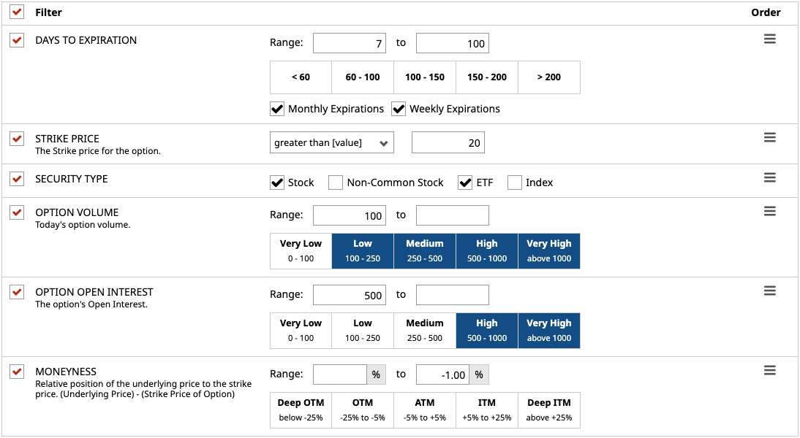
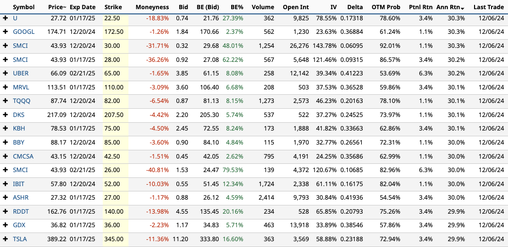

I started this project with the goal of finding "incorrectly" priced Option Contracts. Option sellers generally target expensive options which generally means options with a high annual return relative to the probability that the contract will expire worthless. For example, if a put option is offering 30% annualized returns with 75% chance the contract expires worthless.

